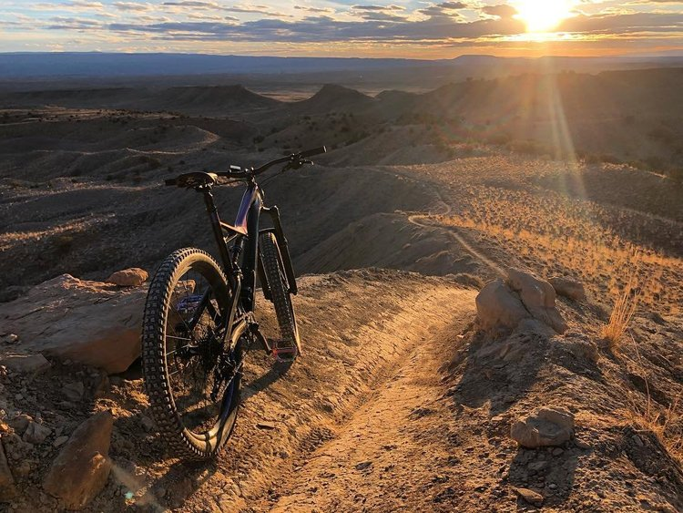
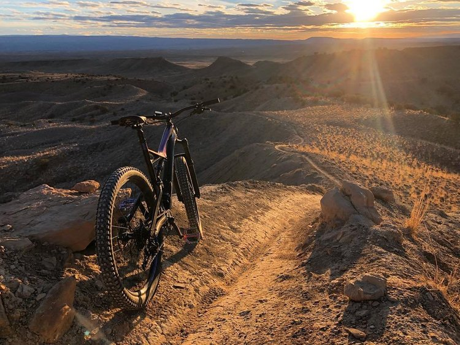

About Me
 

Hi! I am Joshua Tavassolikhah!
I am from the San Francisco Bay Area, but I decided to move down to the Orange County to attend UC Irvine. Currently, I am a senior undergraduate student majoring in Computer Science, with an expected graduation date of June 2020. Throughout my time in college, I have enjoyed learning more about programming and implementing projects.
This past summer, I began working as a Software Development Intern at Experian, where I have been applying my knowledge of web development to build an application that aims to increase my team’s productivity. In addition, I have gained real-world experience working in an Agile environment.
Outside of school and work, I enjoy biking, watching anime, playing video games,
and trying out new foods.
Currently, I am looking for entry level full-time opportunities
or internships in the San Francisco Bay Area or Orange County for Summer 2020!